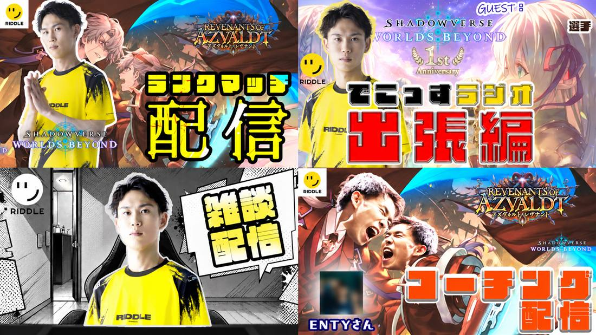

Thumbnail design
Selected work
Web用のビジュアルからイラストまで、制作した作品を掲載しています。 それぞれの画像や制作内容をご覧ください。

Thumbnail design

Illustration
Food & Branding / 03 concepts
架空の飲食店「千輪」をテーマに、 和食・海鮮・炭火肉の三つの業態を設計しました。 写真、色、言葉を料理ごとに組み立てた 自主制作のWebサイトです。
店舗設定を含むコンセプト作品です。実在店舗の制作実績ではありません。